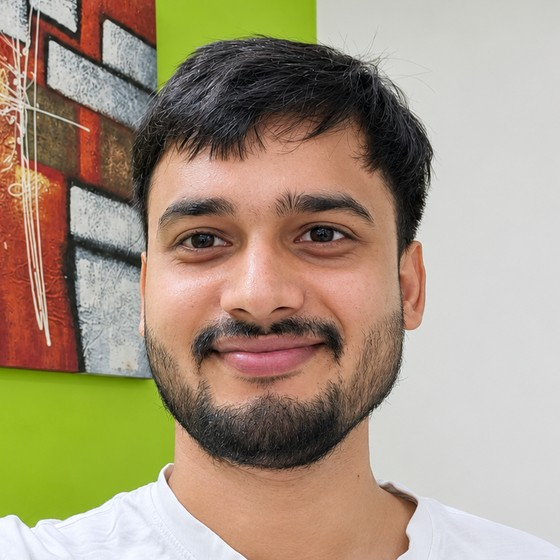
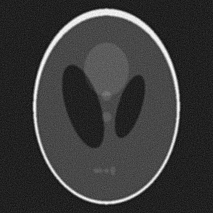
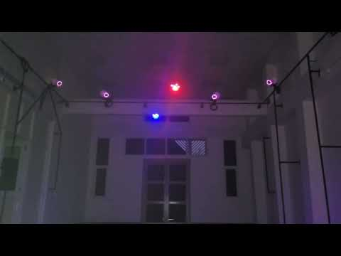

Safe reinforcement learning
Robots that learn from experience while keeping the chance of failure low. In a busy hospital corridor, the robot slows down and keeps its distance when people come close, even when its sensors cannot see everything.

PhD student at Institute of Science Tokyo
I build robots and AI that stay safe in the real world.
I work in Fujisawa Lab at the Institute of Science Tokyo. I am interested in developing learning and control methods that help robots and AI systems make safe decisions in the real world, where people move in unexpected ways, robots share the same space, and sensors are not always reliable. I prove these methods work on paper and test them on real robots. To learn more, see my research.
Approaching the target
Many robots sharing busy spaces with people.
I’m a PhD student in Mathematical and Computing Science at the Institute of Science Tokyo, where I work in Fujisawa Lab with Prof. Katsuki Fujisawa.
My research asks a simple question: how can a robot learn and still stay safe? I combine reinforcement learning, probability, and control theory. I use these tools for robots in hospitals and warehouses, and for AI that makes reliable predictions from real-world video.
Before my PhD, I was a Research Associate at the Robert Bosch Centre for Cyber-Physical Systems, IISc Bengaluru. I did my M.Tech. at IIT Jodhpur with Dr. Anoop Jain, where I built a controller that guides a robot in GPS-denied environments.
I’m always glad to exchange ideas and explore new collaborations. Let’s connect.
Robots that learn from experience while keeping the chance of failure low. In a busy hospital corridor, the robot slows down and keeps its distance when people come close, even when its sensors cannot see everything.
When robots share aisles, each robot’s choice affects the others. I use game theory to plan how they move, so they take turns at crossings instead of blocking or hitting each other.
AI that learns from many kinds of input at once: video, sound, depth, motion sensors and text. When one input is noisy or missing, it leans on the others, holds back instead of guessing, and explains its answer with evidence from each input. This matters for early recognition of what is happening in first-person video and for vision-language models people can rely on.
A learning robot trusts what its sensors tell it. I study small, hidden changes to those inputs that are hard to detect but still change how the robot moves. Knowing how these attacks work is the first step to robots that resist them. Tested on four simulated robots in MuJoCo.
A robot that only knows how far it is from a target can still circle it safely. My controller keeps it inside a safe ring around the target, with safety and security built into the design. Tested on a real Khepera IV robot.
The same idea, scaled up to a team. A leader and two followers circle a target using only distance measurements, settle into an evenly spaced ring, and never cross the inner safety limit or the outer sensing limit. A super-twisting observer estimates what the robots cannot measure directly. Shown here in ROS 2 and Gazebo, with live plots and a constraint check.
Language models can drift into unsafe replies. Here, control theory watches a safety score word by word and steers the model so the score never falls below a strict margin, choosing a calmer word when needed.
A wheeled robot drives to its goal through a field of obstacles while wind-like disturbances push it around. Learning helps it handle the disturbances, and safety rules make sure it always keeps a safe gap.


BeforeAfterDark, low-contrast scans hide small details. Using fractional derivatives, this method sharpens edges and brings out texture in single-channel medical images, so they are easier to read.
Real robots I have worked with.
IIT Jodhpur, DSC Lab
The robot only knows how far it is from the target. Using just that distance, my controller keeps it on a safe circular path. Overhead cameras tracked the robot.
 ▶ Watch video
▶ Watch video
Ground robot
I set it up during my M.Tech. for indoor mapping and navigation with ROS 2. The animation shows how it builds a map of a room with its lidar.

▶ Watch flightAerial robot
A small indoor drone for flight control and team flying experiments.
IIT Jodhpur, embedded systems project
Bend your fingers and the arm follows. Flex sensors on a glove change their resistance as each finger bends. An Arduino reads them, turns them into servo angles, and an HC-05 Bluetooth module sends the commands wirelessly to the arm. This kind of control lets a person work from a safe distance, for example in bomb disposal. Built with Sourav Sarkar for Dr. Deepakkumar M. Fulwani’s course.


IISc Open Day
A four-wheel robot that drives when you talk to it. You speak a command into a phone app, such as “move forward”, “move backward”, “turn left”, “turn right” or “stop”. The phone sends it over Wi-Fi, and an Arduino turns it into motor commands. An ultrasonic sensor on a turning servo lets it look around for obstacles. I showed it to visitors at the IISc Open Day.
Every recording in one YouTube playlist.
My name is in bold.
– now
Institute of Science Tokyo. Advisor: Prof. Katsuki Fujisawa
–
Robert Bosch Centre for Cyber-Physical Systems, IISc Bengaluru. Reinforcement learning and resilient control.
–
Rajkiya Engineering College, Kannauj
Two papers accepted at ICC 2027, IIT Kharagpur: safe robot navigation, and safety margins for language models.
Started my PhD at the Institute of Science Tokyo.